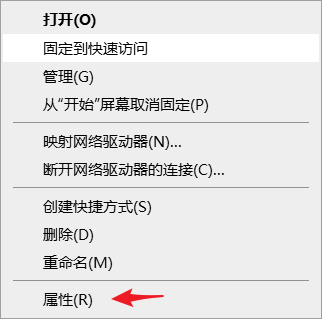
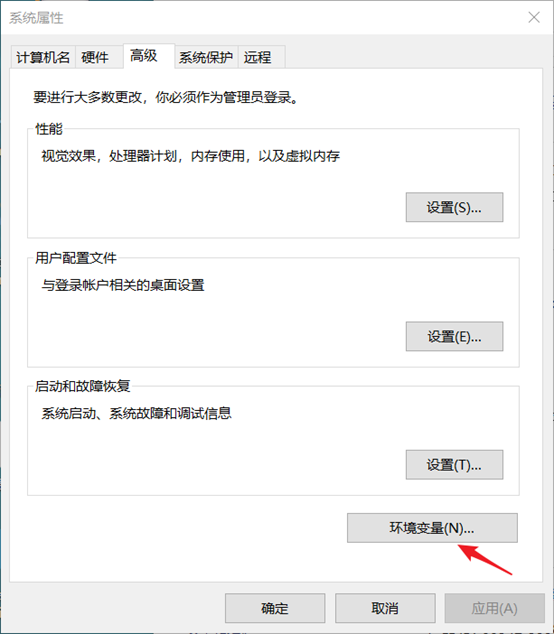
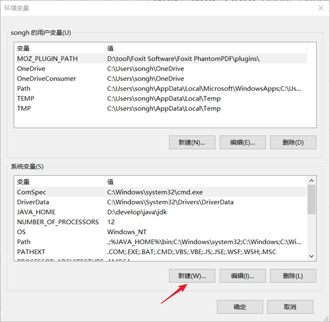
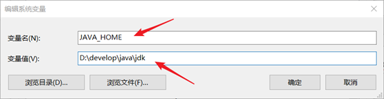
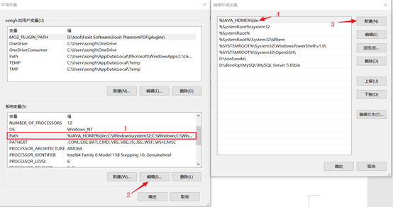
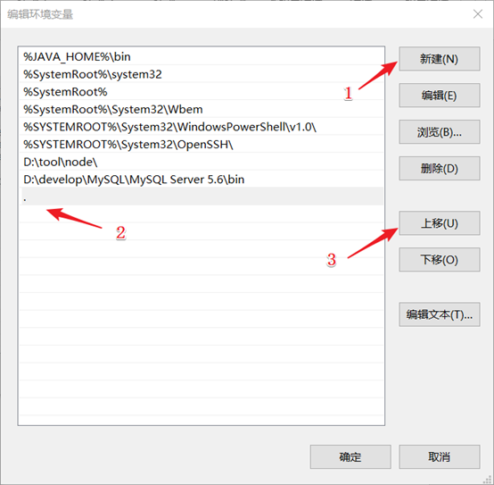
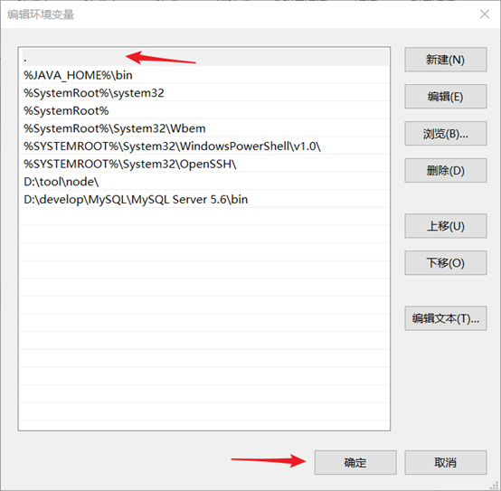
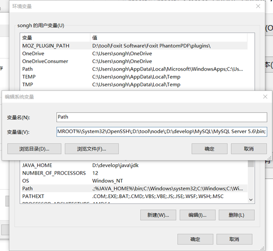
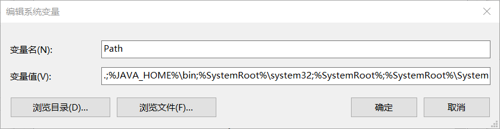
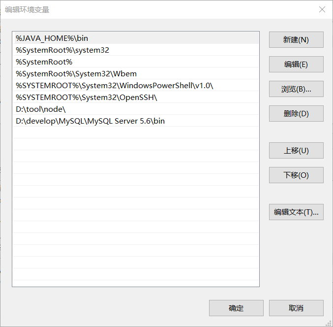

大家好，今天说一下我在配置jdk环境变量时遇到的编辑系统变量窗口显示问题。
首先我们说一下如何配置jdk环境变量。
右击此电脑，点击属性。

跳出如下窗口，点击高级系统设置。
跳出如下窗口，点击环境变量。

跳出如下窗口，点击新建，（注意一定是系统变量栏下的新建）。

跳出如下窗口，编辑变量名和变量值，变量名如下：JAVA_HOME,变量值为安装的jdk路径，点击确定按钮。

找到path点击编辑，按照图上编号步骤执行，编号4是题主之前配置好的，这里需要读者自己输入一下，%JAVA_HOME%/bin。

各位可能注意到编辑环境变量窗口时列表形式显示的，条例清楚，题主比较喜欢这种显示形式，但是我们配置完%JAVA_HOME%/bin之后还会配置一个点（.）如下图。

新建完之后点击上移，到第一行，点击确定。

之后我们在选中path 点击编辑查看时，就出现如下图的单行显示窗口。

我们把点（.）和分号（;）删掉，确定之后就恢复到列表显示。


关于点（.）的说明：指是当前目录；
..指上一级目录，又叫父目录；
如果题主说的不够详细，读者还可以参考网上其他博客。